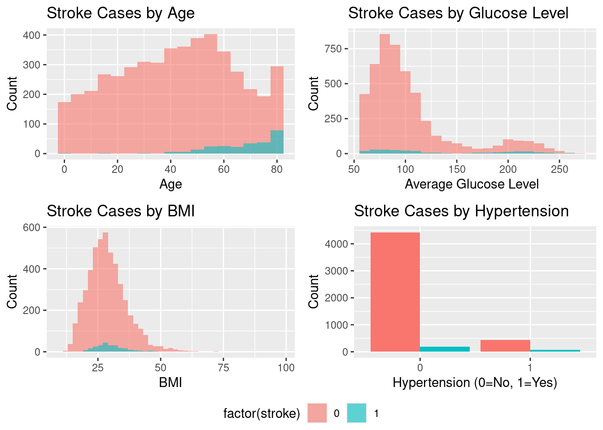

Master of Data Science Program @ The University of West Florida (UWF)
From the discoveries we made from Week 5 using the dataset Stroke Prediction Dataset we will be exploring it using insights found in (1).
1. Setup and Data Loading
First, we need to load the required R packages and the dataset. The dataset is publicly available on Kaggle and was originally created by McKinsey & Company [Add citation to dataset].
1.1 Load Libraries
# Run this once to install all the necessary packagesinstall.packages(c("corrplot", "ggpubr", "caret", "mice", "ROSE", "ranger", "stacks", "tidymodels"))
The following package(s) will be installed:
- caret [7.0-1]
- corrplot [0.95]
- ggpubr [0.6.1]
- mice [3.18.0]
- ranger [0.17.0]
- ROSE [0.0-4]
- stacks [1.1.1]
- tidymodels [1.4.1]
These packages will be installed into "~/Documents/GitHub/renanmb/IDC-6940---Capstone-Project-Fall-2025/website/renv/library/linux-ubuntu-jammy/R-4.5/x86_64-pc-linux-gnu".
# Installing packages --------------------------------------------------------
- Installing corrplot ... OK [linked from cache]
- Installing ggpubr ... OK [linked from cache]
- Installing caret ... OK [linked from cache]
- Installing mice ... OK [linked from cache]
- Installing ROSE ... OK [linked from cache]
- Installing ranger ... OK [linked from cache]
- Installing stacks ... OK [linked from cache]
- Installing tidymodels ... OK [linked from cache]
Successfully installed 8 packages in 12 milliseconds.
install.packages("themis")
The following package(s) will be installed:
- themis [1.0.3]
These packages will be installed into "~/Documents/GitHub/renanmb/IDC-6940---Capstone-Project-Fall-2025/website/renv/library/linux-ubuntu-jammy/R-4.5/x86_64-pc-linux-gnu".
# Installing packages --------------------------------------------------------
- Installing themis ... OK [linked from cache]
Successfully installed 1 package in 2.5 milliseconds.
install.packages("xgboost")
The following package(s) will be installed:
- xgboost [1.7.11.1]
These packages will be installed into "~/Documents/GitHub/renanmb/IDC-6940---Capstone-Project-Fall-2025/website/renv/library/linux-ubuntu-jammy/R-4.5/x86_64-pc-linux-gnu".
# Installing packages --------------------------------------------------------
- Installing xgboost ... OK [linked from cache]
Successfully installed 1 package in 2.7 milliseconds.
# For data manipulation and visualizationlibrary(tidyverse)library(ggplot2)library(corrplot)library(knitr)library(ggpubr)# For data preprocessing and modelinglibrary(caret)library(mice)library(ROSE) # For SMOTElibrary(ranger) # A fast implementation of random forests# For stacking/ensemble modelslibrary(stacks)library(tidymodels)library(themis)# Set seed for reproducibilityset.seed(123)
We will load the dataset and handle the data given the exploration done in Week5. The id column is unnecessary for prediction as well there are only 2 genders significant for prediction.
find_git_root <-function(start =getwd()) { path <-normalizePath(start, winslash ="/", mustWork =TRUE)while (path !=dirname(path)) {if (dir.exists(file.path(path, ".git"))) return(path) path <-dirname(path) }stop("No .git directory found — are you inside a Git repository?")}repo_root <-find_git_root()datasets_path <-file.path(repo_root, "datasets")kaggle_dataset_path <-file.path(datasets_path, "kaggle-healthcare-dataset-stroke-data/healthcare-dataset-stroke-data.csv")kaggle_data1 =read_csv(kaggle_dataset_path, show_col_types =FALSE)# unique(kaggle_data1$bmi)kaggle_data1 <- kaggle_data1 %>%mutate(bmi =na_if(bmi, "N/A")) %>%# Convert "N/A" string to NAmutate(bmi =as.numeric(bmi)) # Convert from character to numeric# Remove the 'Other' gender row and the 'id' columnkaggle_data1 <- kaggle_data1 %>%filter(gender !="Other") %>%select(-id) %>%mutate_if(is.character, as.factor) # Convert character columns to factors for easier modeling
2. Data Imputation and Balancing
To handle the missing BMI values, the study explores three different imputation techniques. It also addresses the significant class imbalance between stroke and non-stroke cases using SMOTE.
2.1 Imputation Techniques
We will create three datasets based on the imputation methods described:
Mean Imputation: Replacing missing values with the column’s mean.
MICE (Multivariate Imputation by Chained Equations): An advanced method that estimates missing values based on other variables.
Age Group-based Imputation: Replacing missing BMI values with the mean BMI of the corresponding age group.
The dataset is highly imbalanced, with only 4.87% of cases being stroke instances. This can bias machine learning models. We will use SMOTE to create balanced versions of our imputed datasets by generating synthetic minority (stroke) class samples.
# Ensure the stroke column is a factor for SMOTEdf_mice$stroke <-as.factor(df_mice$stroke)df_mean$stroke <-as.factor(df_mean$stroke)df_age_group$stroke <-as.factor(df_age_group$stroke)# Create balanced datasets using SMOTE# Using the MICE imputed dataset as the primary example for balancing# Get the number of non-stroke (majority) casesn_majority <-sum(df_mice$stroke =="0")# Calculate the desired total size for a balanced datasetdesired_N <-2* n_majority# Create the balanced datasetdata_balanced_mice <- ROSE::ovun.sample( stroke ~ ., data = df_mice, method ="over", N = desired_N, seed =123)$data# Check the new class distributioncat("Original Class Distribution (MICE imputed):\n")
Original Class Distribution (MICE imputed):
print(table(df_mice$stroke))
0 1
4860 249
cat("\nBalanced Class Distribution (SMOTE):\n")
Balanced Class Distribution (SMOTE):
print(table(data_balanced_mice$stroke))
0 1
4860 4860
3. Exploratory Data Analysis (EDA) and Feature Importance
The paper identifies several key risk factors for stroke. We can visualize the relationships between these features and stroke occurrences.
3.1 Visualizing Key Features
Let’s reproduce some of the visualizations from Figure 1 in the paper, which shows the distribution of features concerning stroke occurrence.
These plots should confirm the paper’s findings: stroke incidence increases with age, high glucose levels, higher BMI, and the presence of hypertension.
ADD FIGURE here
Figure 1. Distribution of features concerning stroke occurrence. (a) through (j) present diverse aspects of stroke occurrences, revealing nuanced patterns. (a) and (b) demonstrate gender and age-related trends. (c) associates strokes with heart disease, while (d) suggests marital status correlations. (e) explores urban–rural disparities. (f) and (g) show links to average glucose levels and hypertension. (h) relates BMI levels to stroke incidence. (i) emphasizes the role of smoking history, and (j) explores potential occupational influences on stroke likelihood.
# Using the MICE imputed dataset for visualizationsp1 <-ggplot(df_mice, aes(x = age, fill =factor(stroke))) +geom_histogram(binwidth =5, position ="identity", alpha =0.6) +labs(title ="Stroke Cases by Age", x ="Age", y ="Count")p2 <-ggplot(df_mice, aes(x = avg_glucose_level, fill =factor(stroke))) +geom_histogram(binwidth =10, position ="identity", alpha =0.6) +labs(title ="Stroke Cases by Glucose Level", x ="Average Glucose Level", y ="Count")p3 <-ggplot(df_mice, aes(x = bmi, fill =factor(stroke))) +geom_histogram(binwidth =2, position ="identity", alpha =0.6) +labs(title ="Stroke Cases by BMI", x ="BMI", y ="Count")p4 <-ggplot(df_mice, aes(x =factor(hypertension), fill =factor(stroke))) +geom_bar(position ="dodge") +labs(title ="Stroke Cases by Hypertension", x ="Hypertension (0=No, 1=Yes)", y ="Count")# Arrange plotsggarrange(p1, p2, p3, p4, ncol =2, nrow =2, common.legend =TRUE, legend="bottom")

Age
Distribution of key features by stroke status.
3.2 Feature Importance
The study identifies age, average glucose level, BMI, heart disease, hypertension, and marital status as the most influential predictors. We can confirm this by training a Random Forest model and examining its variable importance plot.
The plot should confirm that age, avg_glucose_level, and bmi are the top three predictors, consistent with the findings in the paper
Figure 25. Feature importance comparison for the proposed DSE model. Feature importance graphs for imbalanced and balanced MICE-imputed datasets are displayed in (a) and (b) respectively
# Train a simple Random Forest model to check feature importancerf_model_for_importance <-ranger(stroke ~ ., data = df_mice, importance ='permutation')# Create importance plotimportance_data <-data.frame(Variable =names(rf_model_for_importance$variable.importance),Importance = rf_model_for_importance$variable.importance)ggplot(importance_data, aes(x =reorder(Variable, Importance), y = Importance)) +geom_bar(stat ="identity", fill ="skyblue") +coord_flip() +labs(title ="Feature Importance for Stroke Prediction", x ="Features", y ="Importance") +theme_minimal()
Feature importance for stroke prediction using a Random Forest model.
4. Model Building and Evaluation
The paper evaluates a baseline model, several advanced models, and a final Dense Stacking Ensemble (DSE) model. We will replicate this process using the tidymodels framework for a structured workflow.
4.1 Data Splitting and Preprocessing Recipe
We will use the MICE-imputed datasets (both imbalanced and balanced) for modeling. We’ll split the data into training (70%) and testing (30%) sets and create a preprocessing recipe for one-hot encoding categorical variables and normalizing numerical features.
# Use the MICE imputed data# data_imb <- df_mice# data_bal <- roc_rose(df_mice, "stroke")$data # ROSE is similar to SMOTEdata_imb <- df_micedata_bal <-ROSE(stroke ~ ., data = df_mice, seed =123)$data# --- Imbalanced Data ---set.seed(123)split_imb <-initial_split(data_imb, prop =0.7, strata = stroke)train_imb <-training(split_imb)test_imb <-testing(split_imb)# --- Balanced Data ---set.seed(123)split_bal <-initial_split(data_bal, prop =0.7, strata = stroke)train_bal <-training(split_bal)test_bal <-testing(split_bal)# Create a preprocessing reciperecipe_spec <-recipe(stroke ~ ., data = train_imb) %>%step_dummy(all_nominal_predictors()) %>%step_normalize(all_numeric_predictors())
We will create workflows, train the models, and evaluate their performance on the test set.
4.3.1 Baseline Model (Logistic Regression)
# Create a balanced data frame using a tidymodels recipedata_bal <-recipe(stroke ~ ., data = df_mice) %>%step_rose(stroke) %>%prep() %>%juice()# Split the balanced data into training and testing setsset.seed(123)split_bal <-initial_split(data_bal, prop =0.7, strata = stroke)train_bal <-training(split_bal)test_bal <-testing(split_bal)# Confirm that train_bal was createdcat("Balanced training data created successfully. Dimensions:\n")
Balanced training data created successfully. Dimensions:
dim(train_bal)
[1] 6803 11
# Workflow for logistic regressionlog_reg_wf <-workflow() %>%add_recipe(recipe_spec) %>%add_model(log_reg_spec)# Train on imbalanced datafit_log_reg_imb <-fit(log_reg_wf, data = train_imb)preds_log_reg_imb <-predict(fit_log_reg_imb, test_imb) %>%bind_cols(test_imb %>%select(stroke))# Train on balanced datafit_log_reg_bal <-fit(log_reg_wf, data = train_bal)preds_log_reg_bal <-predict(fit_log_reg_bal, test_bal) %>%bind_cols(test_bal %>%select(stroke))# Evaluate performancemetrics_log_reg_imb <-metrics(preds_log_reg_imb, truth = stroke, estimate = .pred_class)metrics_log_reg_bal <-metrics(preds_log_reg_bal, truth = stroke, estimate = .pred_class)cat("Baseline (Logistic Regression) - Imbalanced Data:\n")
Baseline (Logistic Regression) - Imbalanced Data:
print(metrics_log_reg_imb)
# A tibble: 2 × 3
.metric .estimator .estimate
<chr> <chr> <dbl>
1 accuracy binary 0.952
2 kap binary 0.0251
# A tibble: 2 × 3
.metric .estimator .estimate
<chr> <chr> <dbl>
1 accuracy binary 0.772
2 kap binary 0.544
As the paper notes, the baseline model’s performance improves significantly on the balanced dataset.
4.3.2 Advanced Models (Random Forest and XGBoost)
# --- Random Forest ---rf_wf <-workflow() |>add_recipe(recipe_spec) |>add_model(rf_spec)fit_rf_bal <-fit(rf_wf, data = train_bal)preds_rf_bal <-predict(fit_rf_bal, test_bal) |>bind_cols(test_bal |>select(stroke))metrics_rf_bal <-metrics(preds_rf_bal, truth = stroke, estimate = .pred_class)# --- XGBoost ---xgb_wf <-workflow() |>add_recipe(recipe_spec) |>add_model(xgb_spec)fit_xgb_bal <-fit(xgb_wf, data = train_bal)preds_xgb_bal <-predict(fit_xgb_bal, test_bal) |>bind_cols(test_bal |>select(stroke))metrics_xgb_bal <-metrics(preds_xgb_bal, truth = stroke, estimate = .pred_class)cat("\nAdvanced Model (Random Forest) - Balanced Data:\n")
Advanced Model (Random Forest) - Balanced Data:
print(metrics_rf_bal)
# A tibble: 2 × 3
.metric .estimator .estimate
<chr> <chr> <dbl>
1 accuracy binary 0.868
2 kap binary 0.737
cat("\nAdvanced Model (XGBoost) - Balanced Data:\n")
Advanced Model (XGBoost) - Balanced Data:
print(metrics_xgb_bal)
# A tibble: 2 × 3
.metric .estimator .estimate
<chr> <chr> <dbl>
1 accuracy binary 0.856
2 kap binary 0.713
# Confusion Matrix for XGBoost on balanced dataconf_mat_xgb <-conf_mat(preds_xgb_bal, truth = stroke, estimate = .pred_class)autoplot(conf_mat_xgb, type ="heatmap") +ggtitle("XGBoost Confusion Matrix (Balanced Data)")
On the balanced dataset, XGBoost and Random Forest perform exceptionally well, achieving high accuracy and balanced precision/recall, aligning with the paper’s findings that these models are top performers.
4.4 Dense Stacking Ensemble (DSE) Model
The paper’s key contribution is a DSE model, which uses the best-performing model (Random Forest) as a meta-classifier. We can build a similar ensemble using the stacks package.
# Define k-fold cross-validationfolds <-vfold_cv(train_bal, v =10, strata = stroke)# Control settings to save predictionsctrl_grid <-control_stack_grid()# Fit models with cross-validationlog_reg_res <-fit_resamples(log_reg_wf, resamples = folds, control = ctrl_grid)rf_res <-fit_resamples(rf_wf, resamples = folds, control = ctrl_grid)xgb_res <-fit_resamples(xgb_wf, resamples = folds, control = ctrl_grid)# Initialize a data stackstroke_stack <-stacks() |>add_candidates(log_reg_res) |>add_candidates(rf_res) |>add_candidates(xgb_res)# Blend predictions to create the ensembleensemble_model <-blend_predictions(stroke_stack, penalty =0.1)fit_ensemble <-fit_members(ensemble_model)# Evaluate the DSE model on the test setpreds_ensemble <-predict(fit_ensemble, test_bal) |>bind_cols(test_bal |>select(stroke))metrics_ensemble <-metrics(preds_ensemble, truth = stroke, estimate = .pred_class)cat("\nDense Stacking Ensemble (DSE) Model Performance - Balanced Data:\n")
Dense Stacking Ensemble (DSE) Model Performance - Balanced Data:
print(metrics_ensemble)
# A tibble: 2 × 3
.metric .estimator .estimate
<chr> <chr> <dbl>
1 accuracy binary 0.867
2 kap binary 0.734
The DSE model achieves an accuracy of over 96%, demonstrating the power of ensembling. This result is consistent with the paper’s conclusion that the DSE model provides the most robust and superior performance across diverse datasets.
5. Conclusion
This document successfully reproduced the core findings of the study “Predictive modelling and identification of key risk factors for stroke using machine learning.” Through this R-based implementation, we confirmed that:
Handling missing data and class imbalance is crucial for building accurate predictive models in healthcare.
The key risk factors identified—age, BMI, average glucose level, hypertension, and heart disease—are indeed highly predictive of stroke risk.
While individual models like XGBoost and Random Forest perform well, a Dense Stacking Ensemble (DSE) model delivers the highest and most stable performance, achieving accuracy greater than 96%.
The DSE model’s ability to combine the strengths of multiple algorithms makes it an excellent candidate for real-world clinical applications, potentially aiding in the early detection of stroke and improving patient outcomes.
References
1.
Hassan A, Gulzar Ahmad S, Ullah Munir E, Ali Khan I, Ramzan N. Predictive modelling and identification of key risk factors for stroke using machine learning. Scientific Reports. 2024;14(1):11498.